Potential of Eletric/Hybrid Propulsion Systems to Redute Petroluem Use and Greenhouse Gas Emissions
Contents
Driving cycles
In order to perform this study, the driving cycles were ploted in matLab. Two types of driving cycles were used:
Basic urbarn driving cycle
clear close all clc [basic_time, basic_velocity] = BasicDrivingCycle(); figure(); plot(basic_time, basic_velocity); grid on; title('Basic urban driving cycle'); xlabel('time $[s]$','Interpreter', 'latex'); ylabel('Velocity [$km/h$]','Interpreter', 'latex');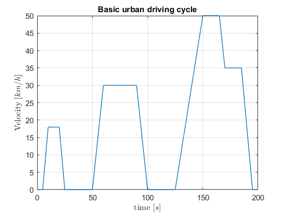
Mix driving cycle
Note that the Mix-driving cycle is composed of urban and extra-urban driving cycles, being the first the concatenation of basic urban driving cycles.
[mix_time, mix_velocity] = MixDrivingCycle(basic_time, basic_velocity); figure() plot(mix_time, mix_velocity); grid on; title('Basic urban driving cycle'); xlabel('time $[s]$','Interpreter', 'latex'); ylabel('Velocity [$km/h$]','Interpreter', 'latex');
Vehicles Configurations and assumptions
In the study there are 4 possible powertrain configurations of light duty urban vehicles, presented in the figures (1), (2), (3) and (4). They consist of pure eletric, pure combustion, series hybrid and paralel hybrid.
Pure Eletric Powertrain
In this configuration the battery in series with the eletric motor/generator in series with the transmission. There are two possible modes of functioning, the motor discharging the batteries while accelerating, and the opposite, generator charging the batteries decelerating.
Acceleration: During discharge the ciruit has an efficiency different of 100%. The overalll efficiecy 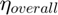 is given by the product of the individual effinciency of each component of the circuit
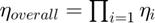.
Thus, for this powertrain, one has that [$battery \rightarrow motor \rightarrow transmission$] will translate in a overall efficiency given by:
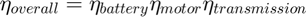
- Assuming that the batteries are made from lithium-ion, according to https://en.wikipedia.org/wiki/Lithium-ion_battery it is reasonable to assume that the discharging effinciency of the battery of around 80%;
- From https://en.wikipedia.org/wiki/Electric_car#Energy_efficiency it is reasonable to assume that the eletric motor has an efficiency of 70%;
- From https://www.nap.edu/read/21744/chapter/7 it is resonable to assume that the effinciecy of an automatic transmission is 90%; So the the overall discharging performance can be computed:
efficiency_battery_discharge = 0.8; efficiency_transmission = 0.9; efficiency_motor = 0.7; efficiency_pure_eletric_discharging = efficiency_battery_discharge*efficiency_motor*efficiency_transmission;
Thus the eletric power in acceleration is given by:
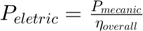
Deceleration During deceleration, it is assumed that the motor works as a generator, recharging the battery. Although it is the same path as acceleration [$transmission \rightarrow generator \rightarrow battery], the efficiencies have different values.
- From it is reasonable to assume that the discharging effinciency of the battery of around 90%;
- Its is reasonable to assume that the generator has an efficiency of 80%;
- Similarly to the accelaration, it is reasonable to assume that the transmission has an efficiency of 90%; So the the overall charging performance can be computed:
efficiency_battery_charge = 0.9; effieciency_transmission = 0.9; efficiency_generator = 0.8; efficiency_pure_eletric_charging = efficiency_battery_charge*efficiency_generator*efficiency_transmission;
Thus the eletric power in deceleration is given by:
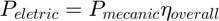
Series Hybrid Powertrain
In the configuration, there is a series connection between the fuel, the diesel generator, the battery pack, the motor/generator, and the transmission. Knowing that combustion engines only have a good performace in a narrow rpm band, called power band, it is assumed that, similiar do hybrid cars in the market, the car can operate in pure eletric mode for a velocities under 50 km/h and as a hybrid for highier velocities. (Good explanation on hybrid here https://www.youtube.com/watch?v=E_xCssR8qQI) The eletric mode has the same efficiency as the pure eletric powertrain, So the efficiency of this power train can be:
- In eletrical mode, the 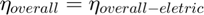;
- According to https://en.wikipedia.org/wiki/Diesel_generator, it is reasonable to assume that the performance of the diesel generator is 46%;
Thus the overall performance is given by:
- , when 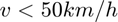
- 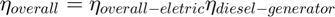, when 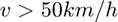
efficiency_diesel_motor = 0.46; effienciency_hybrid_series_eletric_charging = efficiency_pure_eletric_charging; effienciency_hybrid_series_eletric_discharging = efficiency_pure_eletric_discharging*efficiency_diesel_motor;
Parallel Hybrid Powertrain
The parallel power train, there are two path from the power source to the wheels:
- The series between the fuel, the engine and the transmisson;
- The series between the battery, the motor/generator and the transmission;
It is no notice that the engine can asct on the generator in order to charge the battery if needed. So, with this set up, we can consider that for velocieties up to 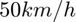, the powertrain functions in pure eletric mode, for velocities greater than it works on pure combustion engine and finally for breaking it is assumed that regenerative breaking allways works. With this, the efficiencies considered are:
- According to https://en.wikipedia.org/wiki/Engine_efficiency, it is cosiderend that the motor is running on diesel engine, being of 46%.
- The eletric path has the same efficiency as the pure eletric powertrain.
effienciency_hybrid_parallel_eletric_charging = efficiency_pure_eletric_charging; effienciency_hybrid_parallel_combustion_discharging = efficiency_diesel_motor;
Power consumption
In this section it is of interest to compare the power consumption between the different powertrains.
The objective os to calculate:
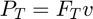
So first one must consider the traction force 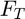 on each car. The forces present are:
- Motor force;
- Drag force;
- Friction force;
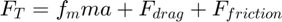
Being:
- 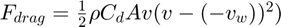
- 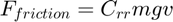
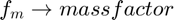; 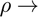 densidade do meio; 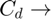 aerodynamic drag coefficient; A frontal surface area; 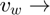 wind speed; 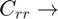 rolling resistance coefficient; 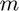 and 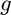 mass a gravity;
Considering 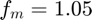 and using the constant values from the table(I) of the laboratory script, one can compute the values of .
close all